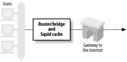
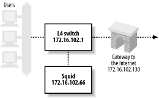
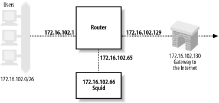

|
|
< Day Day Up > |
|
9.3 The Network DeviceNow that you know all the ins and outs of interception caching, let's see how to actually make it work. We'll start by configuring the network devices that will be intercepting your HTTP connections. 9.3.1 Inline SquidIn this configuration, you don't need a switch or network router to intercept HTTP connections. Instead, Squid runs on a Unix system that is also your router (or perhaps bridge), as shown in Figure 9-3. Figure 9-3. A system that combines routing and caching can easily intercept HTTP trafficThis configuration essentially skips the first three steps shown in Section 9.1. The Squid host already receives the HTTP connection packets because it is the router for your network. If you are taking this approach, feel free to skip ahead to Section 9.4. 9.3.2 Layer Four SwitchesMany organizations use layer four switches specifically for their HTTP interception support. These products offer additional features as well, such as health checks and load balancing. I'll only cover interception here. For information on health checks and load balancing, see O'Reilly's Server Load Balancing and Load Balancing Servers, Firewalls, and Caches (John Wiley & Sons). The following subsections contain working-example configurations for a number of products and techniques. 9.3.2.1 Alteon/NortelThe following configuration is from an ACEswitch 180 and Alteon's WebOS 8.0.21. The network setup is shown in Figure 9-4. Figure 9-4. Sample network for layer four switch interception, for Alteon and Foundry examplesClients are connected to port 1, the connection to the Internet is via port 2, and Squid is on port 3. The following lines are the relevant output of a /cfg/dump command on the switch. You don't necessarily need to type all of these lines. Furthermore, some of the commands may have changed for newer versions of Alteon's software. Note that Alteon calls this feature Web Cache Redirection (WCR). Here's the process, step by step:
To verify that HTTP interception is configured and working correctly, you can use the commands under the /stats/slb and /info/slb menus. The /info/slb/dump command is a quick and easy way to see the entire SLB configuration: >> Main# /info/slb/dump
Real server state:
1: 172.16.102.66, 00:c0:4f:23:d7:05, vlan 1, port 3, health 3, up
Virtual server state:
Redirect filter state:
1: dport http, rport 0, group 1, health tcp, backup none
real servers:
1: 172.16.102.66, backup none, up
Port state:
1: 0.0.0.0, client
filt enabled, filters: 1 224
2: 0.0.0.0, server
filt disabled, filters: empty
3: 0.0.0.0
filt disabled, filters: empty
In this output, notice that the switch says Squid is reachable via port 3 and that the health checks show Squid is up. You can also see that filter 1 has been applied to port 1, where the clients connect. In the Port state section, port 1 is designated as a place where clients connect, and port 2 is similarly marked as a server port. The /stats/slb/real command shows a handful of statistics for the real server (i.e., Squid): >> Main# /stats/slb/real 1 ------------------------------------------------------------------ Real server 1 stats: Health check failures: 0 Current sessions: 41 Total sessions: 760 Highest sessions: 55 Octets: 0 Most of the statistics relate to the number of sessions (i.e., TCP connections). The Total sessions counter should increase if you execute the command again. Lastly, the /stats/slb/group command shows almost the same information: >> Main# /stats/slb/group 1
------------------------------------------------------------------
Real server group 1 stats:
Current Total Highest
Real IP address Sessions Sessions Sessions Octets
---- --------------- -------- ---------- -------- ---------------
1 172.16.102.66 65 2004 90 0
---- --------------- -------- ---------- -------- ---------------
65 2004 90 0
This output would be more interesting if there was more than one real server in the group. 9.3.2.2 FoundryThe configuration in the following example comes from a ServerIron XL, running software version 07.0.07T12. As before, clients are on port 1, the Internet link is on port 2, and Squid is on port 3. However, that matters less for this particular configuration because you can enable HTTP interception globally. Foundry's name for interception caching is Transparent Cache Switching (TCS). Refer back to Figure 9-4 for this example. The first step is to give the switch an IP address so it can perform health checks: ip address 172.16.102.1 255.255.255.0 Foundry allows you to enable or disable TCS on particular ports. However, for the sake of simplicity, let's enable it globally: ip policy 1 cache tcp http global In this line, cache is a keyword that corresponds to the TCS feature. The next line defines a web cache. I've given it the name squid1 and told the switch its IP address: server cache-name squid1 172.16.102.66 The final step is to add the web cache to a cache group: server cache-group 1 cache-name squid1 If you're having problems getting the Foundry switch to divert connections, have a look at the show cache-group output: ServerIron#show cache-group
Cache-group 1 has 1 members Admin-status = Enabled Active = 0
Hash_info: Dest_mask = 255.255.255.0 Src_mask = 0.0.0.0
Cache Server Name Admin-status Hash-distribution
squid1 6 3
HTTP Traffic From <-> to Web-Caches
Name: squid1 IP: 172.16.102.66 State: 6 Groups = 1
Host->Web-cache Web-cache->Host
State CurConn TotConn Packets Octets Packets Octets
Client active 441 12390 188871 15976623 156962 154750098
Web-Server active 193 11664 150722 151828731 175796 15853612
Total 634 24054 339593 167805354 332758 170603710
Some of this output is cryptic, but you can tell interception is working by repeating the command and watching the counters increase. The show server real command provides almost the same information: ServerIron#show server real squid1 Real Servers Info Name : squid1 Mac-addr: 00c0.4f23.d705 IP:172.16.102.66 Range:1 State:Active Wt:1 Max-conn:1000000 Src-nat (cfg:op):(off:off) Dest-nat (cfg:op):(off:off) squid1 is a TRANSPARENT CACHE in groups 1 Remote server : No Dynamic : No Server-resets:0 Mem:server: 02009eae Mem:mac: 045a3714 Port State Ms CurConn TotConn Rx-pkts Tx-pkts Rx-octet Tx-octet Reas ---- ----- -- ------- ------- ------- ------- -------- -------- ---- http active 0 855 29557 379793 471713 373508204 39425322 0 default active 0 627 28335 425106 366016 38408994 368496301 0 Server Total 1482 57892 804899 837729 411917198 407921623 0 Finally, you can use the show logging command to see if the switch believes Squid is up or down: ServerIron#show logging ... 00d00h11m51s:N:L4 server 172.16.102.66 squid1 port 80 is up 00d00h11m49s:N:L4 server 172.16.102.66 squid1 port 80 is down 00d00h10m21s:N:L4 server 172.16.102.66 squid1 port 80 is up 00d00h10m21s:N:L4 server 172.16.102.66 squid1 is up Note that the ServerIron thinks the server is running on port 80. As you'll see later, my examples have Squid running on port 3128. The packet filtering rules actually change the packet's destination port from 80 to 3128. This has some interesting consequences for health checks, which I address later in Section 9.3.2.5. 9.3.2.3 Extreme NetworksIn this example, the hardware is a Summit1i, and the software is Version 6.1.3b11. Once again, the clients are on port 1, the Internet link is on port 2, and Squid is on port 3. The network configuration is shown in Figure 9-5. Figure 9-5. Sample network for intercepting with a router, for the Extreme and Cisco policy routing examplesThe Extreme switch can intercept HTTP connections only for packets that it routes between subnets. In other words, if you use the Extreme switch in layer two mode (with a single VLAN), you can't divert traffic to Squid. To make HTTP interception work, you must configure separate VLANs for users, Squid, and the Internet: configure Default delete port 1-8 create vlan Users configure Users ip 172.16.102.1 255.255.255.192 configure Users add port 1 create vlan Internet configure Internet ip 172.16.102.129 255.255.255.192 configure Internet add port 2 create vlan Squid configure Squid ip 172.16.102.65 255.255.255.192 configure Squid add port 3 The next step is to enable and configure routing in the switch: enable ipforwarding configure iproute add default 172.16.102.130 Lastly, you configure the switch to redirect HTTP connections to Squid: create flow-redirect http tcp destination any ip-port 80 source any configure http add next-hop 172.16.102.66 9.3.2.4 Cisco ArrowpointThe following configuration is based on notes from an old test I ran. However, I don't have access to an arrowpoint switch now and can't verify that these lines are correct. circuit VLAN1
ip address 172.16.102.1 255.255.255.0
service pxy1
type transparent-cache
ip address 172.16.102.66
port 80
protocol tcp
active
owner foo
content bar
add service pxy1
protocol tcp
port 80
active
9.3.2.5 A comment on HTTP servers and health checksI've set up these examples so that the router/switch forwards packets without changing the destination TCP port. The packet filtering rules that I'll cover in Section 9.4 change the destination port. An interesting problem arises when you also run an HTTP server on the Squid box. To run an HTTP server on port 80 while running Squid on port 3128, your packet filter configuration must have a special rule that accepts TCP connections for the HTTP server. Otherwise, the connection gets diverted to Squid. The special rule is simple to construct. If the destination port is 80, and the destination address is the server's, accept the packet normally. All the intercepted packets have foreign destination addresses, so they won't match the special rule. However, when the router/switch makes an HTTP health check, it connects to the server's IP address. Thus, the health-check packet matches the special rule and isn't diverted to Squid. The router/switch is checking the health of the wrong server. If the HTTP server is down, but Squid is up (or vice versa), the health check will be wrong. If you find yourself in this situation, you have a few options:
9.3.3 Cisco Policy RoutingPolicy routing isn't that different from what I've talked about with layer four switches. It is implemented in routing products made by Cisco and others. The primary difference is that policy routing doesn't include any health checking. Thus, if Squid becomes overloaded or fails entirely, the router continues to forward packets to Squid, rather than route them directly to origin servers. Policy routing requires that Squid be on one of the router's directly connected subnets. In this example, I'm using a Cisco 7204 router running IOS Version 12.0(5)T. The network configuration is the same as the previous example, shown in Figure 9-5. The first configuration step is to define an access list that matches port 80 packets coming from clients. You must make sure that port 80 packets coming from Squid aren't reintercepted. One way to do this is with a specific rule that denies packets coming from Squid, followed by a rule that allows all others: access-list 110 deny tcp host 172.16.102.66 any eq www access-list 110 permit tcp any any eq www Alternatively, if Squid and your users are on different subnets, you can permit only those packets that originate from the client network: access-list 110 permit tcp 10.102.0.0 0.0.255.255 any eq www The next step is to define a route map. This is where you tell the router where to forward the intercepted packets: route-map proxy-redirect permit 10 match ip address 110 set ip next-hop 172.16.102.66 Those commands say, "If the IP address matches access-list 110, forward the packet to 172.16.102.66." The 10 on the route-map line is a sequence number in case you have multiple route maps. The final step is to apply the route map to interfaces where your clients connect: interface Ethernet0/0 ip policy route-map proxy-redirect IOS doesn't provide much in the way of debugging for policy routing. However, the show route-map command may be sufficient: router#show route-map proxy-redirect
route-map proxy-redirect, permit, sequence 10
Match clauses:
ip address (access-lists): 110
Set clauses:
ip next-hop 172.16.102.66
Policy routing matches: 730 packets, 64649 bytes
9.3.4 Web Cache Coordination ProtocolCisco's answer to layer four switching technology (before they acquired Arrowpoint) is the Web Cache Coordination Protocol (WCCP).[2] WCCP is different from the typical layer four interception in a couple of ways.
First, intercepted packets are encapsulated with GRE (Generic Routing Encapsulation). This simply allows them to traverse subnets, which means Squid doesn't need to be directly connected to the router. Because they are encapsulated, the Squid host must unencapsulate them. Not all Unix systems have the code for unwrapping GRE packets. The second difference is in how the router decides to spread the load among multiple caches. In fact, the router doesn't make this decision, the cache does. When a router has a group of WCCP-enabled caches, one nominates itself to be the leader. The leader decides how to spread the load and informs the router. This is an extra step that must occur before the router can redirect any connections. Because WCCP uses GRE, the router may be forced to fragment large TCP packets from HTTP requests. Fortunately, this shouldn't occur very often because most HTTP requests are smaller than the Ethernet MTU size (1500 octets). The default TCP and IP packet headers are 20 octets each, which means an Ethernet frame can carry 1460 octets of actual data. GRE encapsulation adds 20 octets for the GRE header, plus another 20 for the second IP header. Thus a normal 1500-octet TCP/IP packet from the client becomes 1540 octets after encapsulation. This is too large to transmit in a single Ethernet frame, so the router fragments the original packet into two packets. 9.3.4.1 WCCPv1The configuration examples in this section were tested on a Cisco 7204 running IOS Version 12.0(5)T. The network configuration is the same as shown in Figure 9-5. First, enter these two lines in the IOS configuration to enable WCCP for the router: ip wccp version 1 ip wccp web-cache Second, you must enable WCCP on individual router interfaces. You should do this only on interfaces where HTTP packets leave the router. In other words, select interfaces that connect to origin servers or your Internet gateway: interface Ethernet0/1 ip address 172.16.102.129 255.255.255.192 ip wccp web-cache redirect out Be sure to save your configuration changes. You may need to use an access list to prevent interception for certain web sites. You can also use the access list to prevent forwarding loops. For example: ! don't re-intercept connections coming from Squid: access-list 112 deny tcp host 172.16.102.66 any eq www ! don't intercept this broken web site access-list 112 deny tcp any 192.16.8.7 255.255.255.255 eq www ! allow other HTTP traffic access-list 110 permit tcp any any eq www ip wccp web-cache redirect-list 112 The router doesn't send any traffic to Squid until Squid announces itself to the router. I explain how to configure Squid for WCCP in Section 9.5.1. 9.3.4.2 WCCPv2The standard Squid distribution currently only supports WCCPv1. However, you can find a patch for WCCPv2 on the http://devel.squid-cache.org/ site. This code is still experimental. Note that the GRE packets sent from the router to Squid contain an additional four octets. WCCPv2 inserts a redirect header between the GRE header, and the encapsulated IP packet. You may need to modify your kernel code to account for this additional header. 9.3.4.3 DebuggingIOS provides a couple of commands to monitor and debug WCCP. The show ip wccp web-cache command provides some basic information: router#show ip wccp web-cache
Global WCCP information:
Router information:
Router Identifier: 172.16.102.129
Protocol Version: 1.0
Service Identifier: web-cache
Number of Cache Engines: 1
Number of routers: 1
Total Packets Redirected: 1424
Redirect access-list: -none-
Total Packets Denied Redirect: 0
Total Packets Unassigned: 0
Group access-list: -none-
Total Messages Denied to Group: 0
Total Authentication failures: 0
For a few more details, add the word detail to the end of the previous command: router#show ip wccp web-cache detail
WCCP Cache-Engine information:
IP Address: 172.16.102.66
Protocol Version: 0.4
State: Usable
Initial Hash Info: 00000000000000000000000000000000
00000000000000000000000000000000
Assigned Hash Info: FFFFFFFFFFFFFFFFFFFFFFFFFFFFFFFF
FFFFFFFFFFFFFFFFFFFFFFFFFFFFFFFF
Hash Allotment: 256 (100.00%)
Packets Redirected: 1424
Connect Time: 00:17:40
Here you can see Squid's IP address and state. If more than one cache speaks WCCP to the router, the hash assignment information should look different. Most likely, each cache receives an equal proportion of the hash buckets. Note that the detailed output has a Protocol Version line with a different value than the first command. Unfortunately, the word "version" is overloaded. The show ip wccp web-cache command appears to report the WCCP protocol major version number (i.e., 1 or 2), while the detail version seems to be a different (perhaps internal, or minor version) number that matches the value of Squid's wccp_version directive. |
|
|
< Day Day Up > |
|